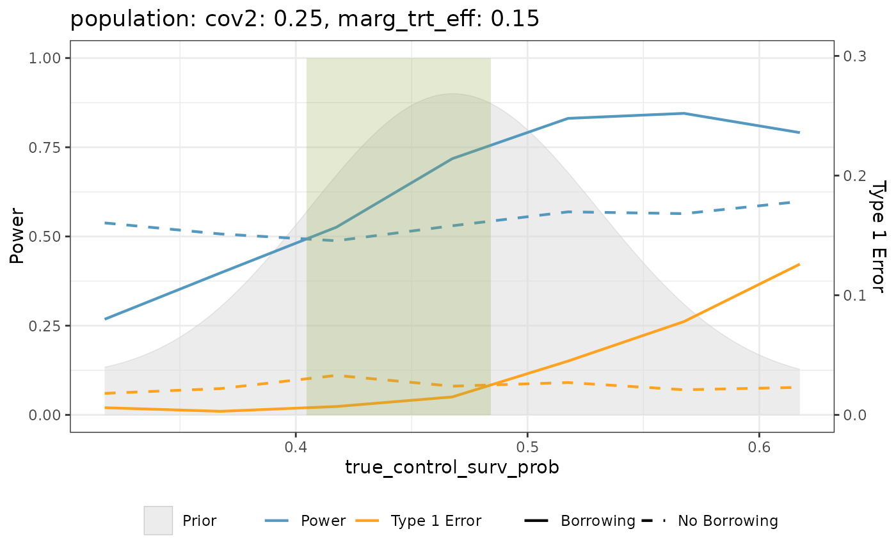
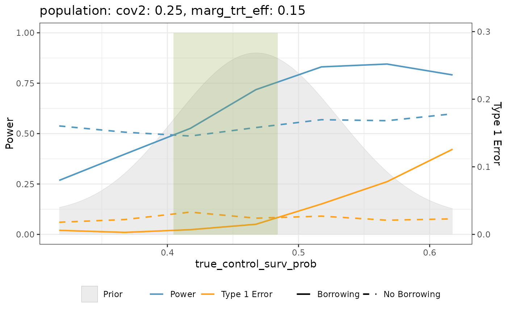

Create visualization plots to help identify the "sweet spot" in borrowing
strategies across different simulation scenarios. For each unique scenario
defined by the combination of variables in scenario_vars, the function
produces a plot showing power, type I error, and the distribution of the
design prior for the control marginal parameter for approaches with and
without borrowing.
sweet_spot_plot(
.data,
scenario_vars,
trt_diff,
control_marg_param,
h0_prob,
h0_prob_no_borrowing,
design_prior = NULL,
highlight = TRUE
)Arguments
- .data
A data frame containing iteration-level simulation results.
- scenario_vars
A vector of quoted column names corresponding to variables used to define unique simulation scenarios. Each unique combination of values in these columns will generate a separate plot.
- trt_diff
An unquoted column name representing the treatment difference. Used to identify scenarios with null effect (trt_diff = 0) for type I error calculation.
- control_marg_param
An unquoted column name to be used as the x-axis in the plots. This is typically the control endpoint of interest on the marginal scale (e.g., control response rate).
- h0_prob
An unquoted column name containing the probability of rejecting the null hypothesis when when borrowing external data.
- h0_prob_no_borrowing
An unquoted column name containing the probability of rejecting the null hypothesis when not borrowing external data.
- design_prior
An unquoted column name containing distributional objects that represent the design prior distribution for the control marginal parameter (e.g., posterior distribution using the external control data). Used to aid visualization of which values of the control marginal parameter are assumed to be plausible. Default is
NULL, in which case no design prior is plotted. See Details for more information.- highlight
Logical value to indicate if you want sweet spot highlighting or not. If
TRUEthe sweet spot (where borrowing increase power and reduces type 1 error) will be highlighted.
Value
A list of ggplot objects, one for each unique scenario defined by
scenario_vars. Each plot shows:
Power curves for the cases with and without borrowing
Type I error rates for the cases with and without borrowing
Distribution of the design prior (if
design_prioris specified)
Details
The function calculates power and type I error rates for BDB approaches
that borrow from external data (e.g., use of a robust mixture prior with positive
weight on the informative component) and an approach that does not
borrow from external data (e.g., use of a vague prior) under each scenario
and visualizes them together as a function of the underlying control marginal
parameter of interest (e.g., control response rate for binary outcomes) that
may vary as a result of drift. This helps identify the "sweet spot" where borrowing
results in higher power and lower type I error rates compared to not borrowing.
Type I error is calculated using scenarios where trt_diff equals 0, and power
is calculated for all scenarios with positive values of trt_diff.
If design_prior is non-NULL, the design prior distribution is included
in the plot to provide insight into which values of the control marginal
parameter are plausible given this assumed design prior. We note that
design_prior can represent any informative prior that potentially
incorporates the external control data (e.g., the posterior distribution of
the control marginal parameter constructed using the external data and a
vague prior). Each element of the vector corresponding to design_prior must
be a distributional object with a family equal to "beta", "normal", or
"mixture" (where each component is either "beta" or "normal"). For the
time-to-event case in which a multivariate normal prior is assumed for the
control log-shape and intercept of a Weibull proportional hazards model,
this distribution must first be translated into a univariate beta design
prior for the control survival probability at some prespecified time.
This approximation can be done using approx_mvn_at_time(). If the
design priors in the vector indicated by design_prior differ across
iterations within a given scenario (e.g., using the IPW power prior as the
iteration-specific design prior), then the average distribution will be
plotted (i.e., a distribution of the same family with the hyperparameters
averaged across iterations).
References
Best, N., Ajimi, M., Neuenschwander, B., Saint-Hilary, G., & Wandel, S. (2024). Beyond the Classical Type I Error: Bayesian Metrics for Bayesian Designs Using Informative Priors. Statistics in Biopharmaceutical Research, 17(2), 183–196. doi:10.1080/19466315.2024.2342817
Examples
library(dplyr)
# Assuming binary_sim_df is a data frame with simulation results in the shape
# of binary template code
plots <- sweet_spot_plot(
.data = binary_sim_df,
scenario_vars = c("population", "marg_trt_eff"),
trt_diff = marg_trt_eff,
control_marg_param = true_control_RR,
h0_prob = reject_H0_yes,
h0_prob_no_borrowing = no_borrowing_reject_H0_yes,
design_prior = pwr_prior
)
# Display the first plot
plots[[1]]
 tte_plots <- tte_sim_df |>
mutate(beta_appox = approx_mvn_at_time(mix_prior, time = 12)) |>
sweet_spot_plot(
scenario_vars = c("population", "marg_trt_eff"),
trt_diff = marg_trt_eff,
control_marg_param = true_control_surv_prob,
h0_prob = reject_H0_yes,
h0_prob_no_borrowing = no_borrowing_reject_H0_yes,
design_prior = beta_appox
)
tte_plots[[1]]

tte_plots <- tte_sim_df |>
mutate(beta_appox = approx_mvn_at_time(mix_prior, time = 12)) |>
sweet_spot_plot(
scenario_vars = c("population", "marg_trt_eff"),
trt_diff = marg_trt_eff,
control_marg_param = true_control_surv_prob,
h0_prob = reject_H0_yes,
h0_prob_no_borrowing = no_borrowing_reject_H0_yes,
design_prior = beta_appox
)
tte_plots[[1]]
